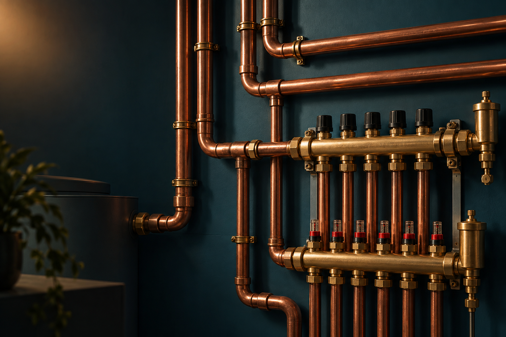
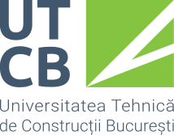
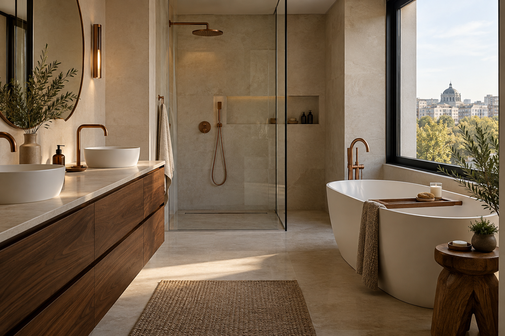
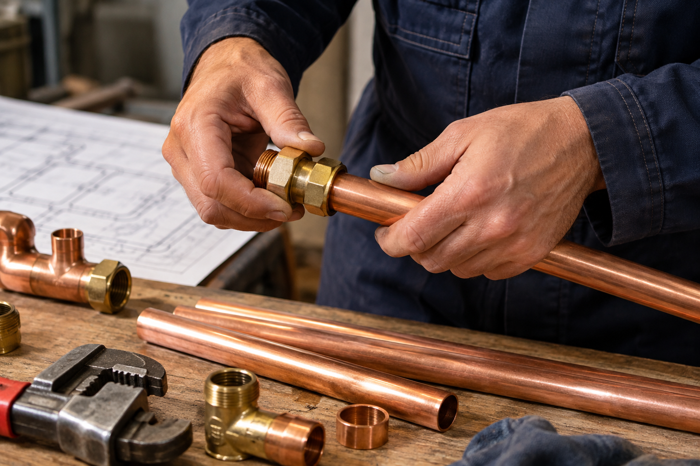

EXPERIENȚĂ PRACTICĂ
22 de ani.
Mâini sigure.
Experiență care se vede
în fiecare detaliu.

PROCA CRISTI · BUCUREȘTI & ILFOV
Instalații complete, gândite de un inginer.
22 de ani de experiență. Un preț corect.
Și un om pe care îl poți suna.
EXPERIENȚĂ PRACTICĂ
Experiență care se vede
în fiecare detaliu.

PREGĂTIRE SOLIDĂ
Construcții Civile,
Industriale și Agricole.
ZI ȘI NOAPTE
Disponibil telefonic 24/7.
Deplasarea se confirmă la apel.
01 / CU CE TE POT AJUTA
Construiești, renovezi sau ai o problemă de rezolvat? Începem cu ce ai nevoie și alegem împreună soluția potrivită.
Configurarea unei soluții coerente pentru locuința ta: trasee, racorduri și echipamente, gândite împreună încă de la început.

02 / CONFORT ZILNICLucrări pentru alimentarea cu apă și evacuare. Discutăm montajul, înlocuirile și adaptările de care are nevoie baia sau bucătăria ta.
Cere detalii ＋
03 / PROBLEME REZOLVATEScurgeri, racorduri cu probleme sau instalații care nu mai funcționează cum trebuie. Stabilim cauza și pașii necesari pentru remediere.
Descrie problema ＋Ai o lucrare diferită? Spune-mi ce ai nevoie și îți confirm dacă te pot ajuta.
CÂND NU POATE AȘTEPTA
Disponibil la telefon zi și noapte. Discutăm situația și îți confirm când pot ajunge.
02 / OMUL DIN SPATELE LUCRĂRII
Sunt absolvent al Universității Tehnice de Construcții București, specializarea Construcții Civile, Industriale și Agricole. În cei 22 de ani de experiență, am învățat să privesc o instalație ca parte din întreaga construcție.
Prefer lucrările complete, unde pot configura lucrurile de la început. Dar și o problemă mică merită aceeași atenție.
Prețurile competitive sunt unul dintre avantajele mele. Discutăm costul în funcție de lucrare, complexitate și materiale.
Îmi explici ce ai nevoie, clarificăm opțiunile și stabilim împreună pașii următori.
03 / SIMPLU, DE LA ÎNCEPUT
La telefon, pe WhatsApp sau prin formular. Câteva detalii și fotografii ajută la înțelegerea lucrării.
Discutăm cerințele, materialele și dacă este necesară o evaluare la fața locului.
Agreăm etapele și programul. La final, verificăm împreună funcționarea instalației.
04 / BINE DE ȘTIUT
Nu găsești răspunsul?
Hai să discutăm despre lucrarea ta.
Toate sectoarele din București și localitățile din județul Ilfov. Deplasarea se stabilește la telefon.
Da. Configurarea instalațiilor complete este tipul de lucrare pe care îl prefer. Spune-mi ce construiești sau renovezi și stabilim soluția potrivită.
Prețul depinde de dimensiunea lucrării, starea instalației, acces și materiale. După ce discutăm detaliile, clarificăm costul înainte de începerea lucrării.
Da, sunt disponibil telefonic 24/7 pentru urgențe. Disponibilitatea pentru deplasare și ora sosirii se confirmă în discuția telefonică.
Da. Pe lângă instalațiile complete, putem discuta despre reparații, înlocuiri și intervenții punctuale. Descrie problema și îți confirm ce pot face.
Tipul lucrării, localitatea sau sectorul, stadiul construcției și o scurtă descriere. Poți trimite și fotografii pe WhatsApp, după deschiderea conversației.
05 / HAI SĂ PUNEM LUCRURILE ÎN MIȘCARE
Spune-mi câteva lucruri despre lucrarea ta.
Începem cu o discuție, fără obligații.